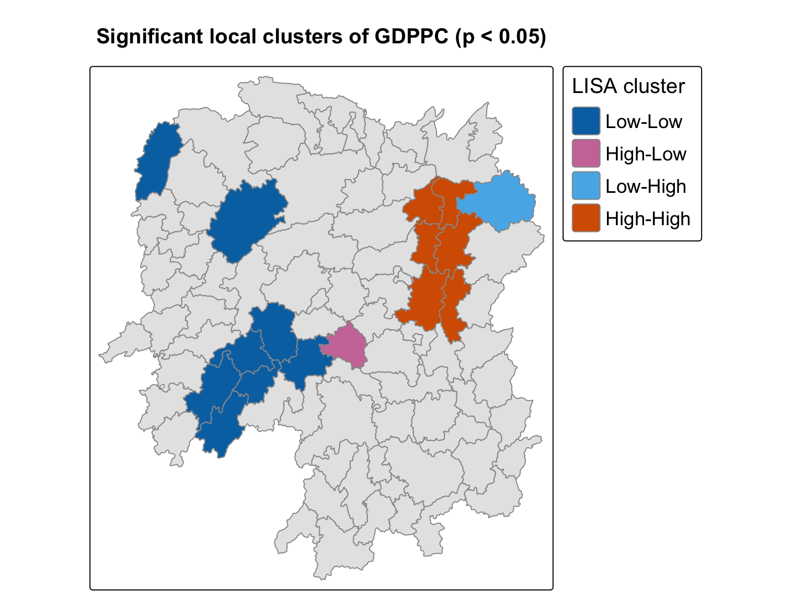
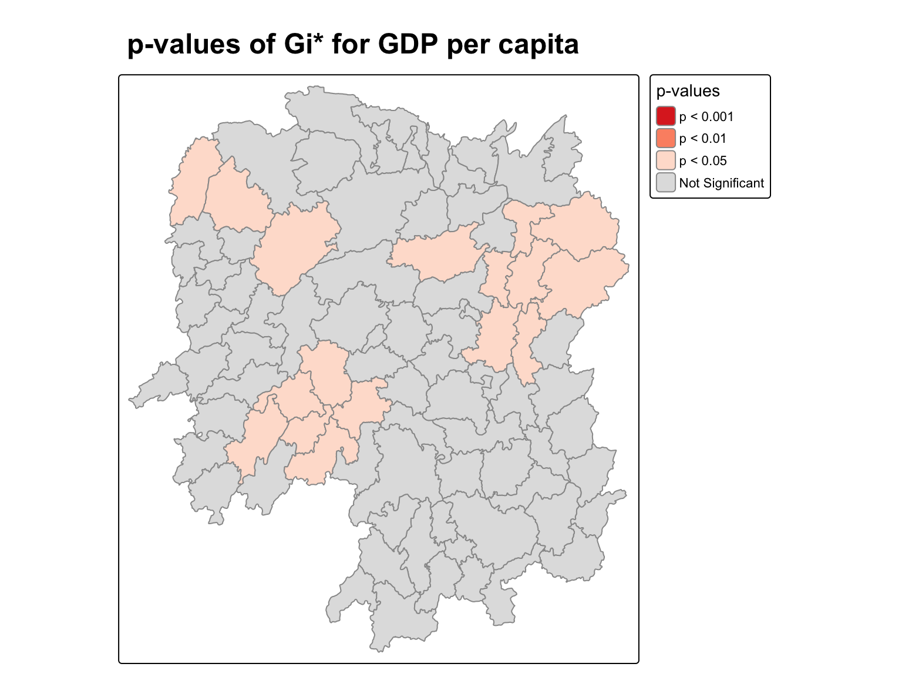

pacman::p_load(sf, sfdep, tmap, tidyverse, knitr, GWmodel, ggstatsplot)In-class Exercise 5
Global and Local Measures of Spatial Autocorrelation
1 Overview
This in-class exercise uses the 88 counties of Hunan to measure spatial autocorrelation of GDP per capita with the sfdep package, first globally for the whole province and then locally for each county.
2 Loading the Packages
3 Preparing the Data
st_read() of sf reads the county boundaries into an sf polygon object.
hunan <- st_read(dsn = "data/geospatial", layer = "Hunan")Reading layer `Hunan' from data source
`/Users/czxtom/Documents/Programming/GAA/ISSS626-GAA/In-class_Ex/In-class_Ex05/data/geospatial'
using driver `ESRI Shapefile'
Simple feature collection with 88 features and 7 fields
Geometry type: POLYGON
Dimension: XY
Bounding box: xmin: 108.7831 ymin: 24.6342 xmax: 114.2544 ymax: 30.12812
Geodetic CRS: WGS 84read_csv() of readr reads the 2012 indicators into a tibble.
hunan2012 <- read_csv("data/aspatial/Hunan_2012.csv")4 Combining Both Data Frames by Using Left Join
left_join() of dplyr attaches the 2012 indicators to the county polygons by the shared County column. select() keeps columns 1 to 4, 7, 15 and 33.
hunan_GDPPC <- left_join(hunan, hunan2012) %>%
select(1:4, 7, 15, 33)
ImportantLearning diary
hunan has to be on the left of the join. The left data frame decides the type of the result, so putting the sf object first keeps the geometry and the output stays an sf data frame.
5 Global Measures of Spatial Association
5.1 Step 1: Deriving Queen’s Contiguity Weights with sfdep
st_contiguity() of sfdep builds the Queen neighbour list, and st_weights() turns it into weights. Both go into hunan_GDPPC as new columns, and .before = 1 puts them at the front.
wm_q <- hunan_GDPPC %>%
mutate(nb = st_contiguity(geometry),
wt = st_weights(nb,
style = "W"),
.before = 1)
NoteLearning diary
st_weights() takes three inputs. nb is the neighbour list from st_contiguity(). style sets the weighting, and the default "W" row-standardises so each county’s weights sum to 1. The other options are "B" binary, "C" globally standardised, "U" which is C divided by the number of neighbours, "minmax", and "S" the variance-stabilising scheme of Tiefelsdorf et al. (1999). allow_zero = TRUE gives a lagged value of zero to a county with no neighbours.
5.2 Step 2: Computing Global Moran’s I
global_moran() of sfdep computes Moran’s I from the GDPPC values, the neighbour list and the weights. Unlike spdep, it returns its result as an object I can inspect with glimpse(), rather than a printed test report.
moranI <- global_moran(wm_q$GDPPC,
wm_q$nb,
wm_q$wt)
glimpse(moranI)List of 2
$ I: num 0.301
$ K: num 7.64
NoteLearning diary
I is Moran’s I, 0.301, the same value moran.test() gave in Hands-on Exercise 5, so sfdep and spdep agree. K is the sample kurtosis of GDPPC, 7.64. That is well above 3, the value for a normal distribution, so GDPPC has heavy tails, mostly from Changsha. This function only computes the statistic. It does not test it, so there is no p-value here yet.
5.3 Step 3: Performing Global Moran’s I Permutation Test
In practice, Moran’s I should be tested with a Monte Carlo simulation. global_moran_perm() of sfdep shuffles GDPPC across the counties nsim times and compares the real Moran’s I with the shuffled ones. set.seed() fixes the shuffles so the result is the same on every run.
set.seed(1234)
global_moran_perm(wm_q$GDPPC,
wm_q$nb,
wm_q$wt,
nsim = 99)
Monte-Carlo simulation of Moran I
data: x
weights: listw
number of simulations + 1: 100
statistic = 0.30075, observed rank = 100, p-value < 2.2e-16
alternative hypothesis: two.sided
TipReminder
It is good practice to call set.seed() before any simulation, so the result can be reproduced. The number of simulations is always nsim + 1, so nsim = 99 gives 100.
6 Local Measures of Spatial Association
6.1 Computing Local Moran’s I
local_moran() of sfdep computes local Moran’s I of GDPPC for every county and tests each one with 99 simulations. It returns a data frame for each county, and unnest() of tidyr spreads it into ordinary columns.
set.seed(1234)
lisa <- wm_q %>%
mutate(local_moran = local_moran(
GDPPC, nb, wt, nsim = 99),
.before = 1) %>%
unnest(local_moran)Rows: 88
Columns: 22
$ ii <dbl> -1.468468e-03, 2.587817e-02, -1.198765e-02, 1.022468e-03,…
$ eii <dbl> 1.472724e-03, -1.337157e-02, 2.542108e-03, -9.522978e-05,…
$ var_ii <dbl> 5.187992e-04, 1.413972e-02, 1.109689e-01, 4.768012e-06, 1…
$ z_ii <dbl> -0.12912898, 0.33007787, -0.04361717, 0.51186518, 0.33919…
$ p_ii <dbl> 8.972556e-01, 7.413411e-01, 9.652096e-01, 6.087454e-01, 7…
$ p_ii_sim <dbl> 0.80, 0.98, 0.92, 0.56, 0.58, 0.86, 0.06, 0.12, 0.02, 0.2…
$ p_folded_sim <dbl> 0.40, 0.49, 0.46, 0.28, 0.29, 0.43, 0.03, 0.06, 0.01, 0.1…
$ skewness <dbl> -1.0560692, -1.0439328, 0.8429629, 0.8423923, 1.3810032, …
$ kurtosis <dbl> 1.31492710, 0.76654076, 0.12251048, 0.37514702, 2.3883407…
$ mean <fct> Low-High, Low-Low, High-Low, High-High, High-High, High-L…
$ median <fct> High-High, High-High, High-High, High-High, High-High, Hi…
$ pysal <fct> Low-High, Low-Low, High-Low, High-High, High-High, High-L…
$ nb <nb> <2, 3, 4, 57, 85>, <1, 57, 58, 78, 85>, <1, 4, 5, 85>, <1,…
$ wt <list> <0.2, 0.2, 0.2, 0.2, 0.2>, <0.2, 0.2, 0.2, 0.2, 0.2>, <0…
$ NAME_2 <chr> "Changde", "Changde", "Changde", "Changde", "Changde", "C…
$ ID_3 <int> 21098, 21100, 21101, 21102, 21103, 21104, 21109, 21110, 2…
$ NAME_3 <chr> "Anxiang", "Hanshou", "Jinshi", "Li", "Linli", "Shimen", …
$ ENGTYPE_3 <chr> "County", "County", "County City", "County", "County", "C…
$ County <chr> "Anxiang", "Hanshou", "Jinshi", "Li", "Linli", "Shimen", …
$ GDPPC <dbl> 23667, 20981, 34592, 24473, 25554, 27137, 63118, 62202, 7…
$ Disp_Inc <dbl> 16610, 18925, 19498, 18985, 18604, 19275, 27345, 24020, 2…
$ geometry <POLYGON [°]> POLYGON ((112.0625 29.75523..., POLYGON ((112.228…
NoteLearning diary
The main columns are ii (local Moran’s I), eii (its expected value), var_ii (its variance), z_ii (the standard deviate), p_ii (the p-value from the normal approximation), p_ii_sim (the p-value from the simulations) and mean, median and pysal (the quadrant, High-High, Low-Low, Low-High or High-Low). Unlike the global test, there is one value per county, so this shows where the clustering is, not just whether it exists.
6.2 Plotting LISA Map
The lisa sf data frame has three fields with the LISA categories, mean, median and pysal. In general mean is used. filter() keeps only the counties whose simulated p-value is below 0.05, and those are drawn on top of a grey map of all 88 counties.

lisa_sig <- lisa %>%
filter(p_ii_sim < 0.05)
tmap_mode("plot")
tm_shape(lisa) +
tm_polygons(fill = "grey90", col = "grey60") +
tm_shape(lisa_sig) +
tm_polygons(fill = "mean",
fill.scale = tm_scale_categorical(
values = c("#0072B2", # Low-Low
"#CC79A7", # High-Low
"#56B4E9", # Low-High
"#D55E00")), # High-High
fill.legend = tm_legend(
title = "LISA cluster",
position = tm_pos_out("right", "center"),
text.size = 1.15,
width = 6),
col = "grey60") +
tm_title("Significant local clusters of GDPPC (p < 0.05)",
size = 1.5, fontface = "bold") +
tm_layout(legend.title.size = 1.25)
CautionWhere I differ from the prof’s code
I made three small changes. The default palette uses green for High-High, and red with green is the pair colour-blind readers struggle with most, so I set blue, sky blue, pink and orange in the same class order. I moved the legend outside the map so it cannot cover a county, and added a title. I also dropped fill_alpha from tm_borders(), since borders have no fill, and set the border colour inside tm_polygons() instead.
7 Hot Spot and Cold Spot Area Analysis (HCSA)
7.1 Computing Local Gi* Statistics
include_self() adds each county to its own neighbour list, which Gi* needs. st_inverse_distance() of sfdep then weights each neighbour by one over its distance, so closer counties count more.
wm_idw <- hunan_GDPPC %>%
mutate(nb = include_self(st_contiguity(geometry)),
wts = st_inverse_distance(nb,
geometry,
scale = 1,
alpha = 1),
.before = 1)local_gstar_perm() computes Gi* for every county and tests each one with 99 simulations.
set.seed(1234)
HCSA <- wm_idw %>%
mutate(local_Gi = local_gstar_perm(
GDPPC, nb, wts, nsim = 99),
.before = 1) %>%
unnest(local_Gi)7.2 Visualising p-value of Local Gi*
tm_polygons() maps p_sim, the simulated p-value of Gi*, with fixed breaks at the usual significance levels. Counties above 0.05 are grey.

tmap_mode("plot")
tm_shape(HCSA) +
tm_polygons(
fill = "p_sim",
fill.scale = tm_scale_intervals(
breaks = c(0, 0.001, 0.01, 0.05, 1.0),
labels = c("p < 0.001", "p < 0.01", "p < 0.05", "Not Significant"),
values = c("#de2d26", "#fc9272", "#fee0d2", "#e0e0e0")),
fill.legend = tm_legend(
title = "p-values",
position = tm_pos_out("right", "center")),
col = "grey60") +
tm_title("p-values of Gi* for GDP per capita",
size = 1.5, fontface = "bold")